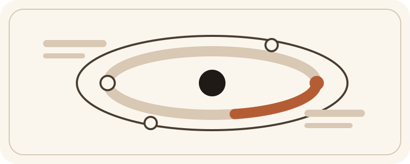

Co-founder at ResiDesk
Arjun Kannan
I build products for messy systems.
I co-founded ResiDesk. We build AI tools for multifamily operators and use resident conversations to help teams see problems earlier, respond with more context, and make better decisions.
Before that I worked at Climb Credit and BlackRock. Before that I studied applied physics at Cornell and got into software in a lab because writing code turned out to be the fastest way to make a tedious process better.
From the outside those jumps can look random. They are not. I keep ending up in the same kind of problem: the information is already there, but it is trapped in the wrong system, or it reaches the wrong person too late.

